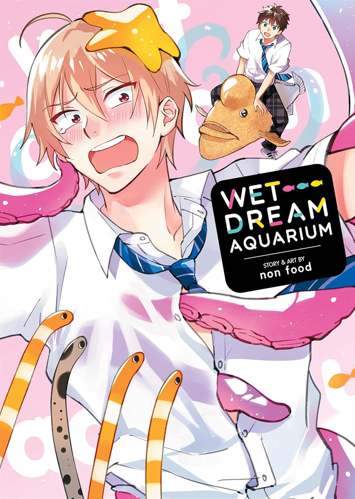

＜—Back
Wet Dream Aquarium
Author: non food
Company: Seven Seas
Official Site

“I, Yuri Hiroto, have apparently turned into a pervert. I’ve been having dirty dreams lately—about getting groped by sea creatures! And even worse, these dreams include someone staring at me during my filthy fish time: the marine biology nerd from my class, Ogasawara-kun! The guy is so obsessed with undersea life that honestly, he kinda weirded me out at first. But now that I’m deep in the closet pretending to be “normal,” I think it’s attractive that he can be true to himself without caring what people think. Of course, the moment I realized I like him, my dreams became even more obscene! Cut to our hang-out at the aquarium, and while I’m looking at fish with Ogasawara-kun, I actually get turned on?! Seriously, what is wrong with me?!”
Buy (Amazon)